Métodos Cuantitativos I
2026-03-24
Tabla de contenidos
- Síntesis sesión anterior
- Numeración y medición
- Las ideas de investigación
- El diseño
01. Síntesis sesión anterior
¿Qué vimos la clase pasada?
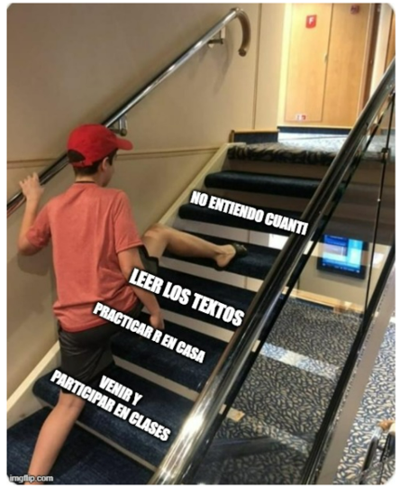
¿Qué vimos la clase pasada?
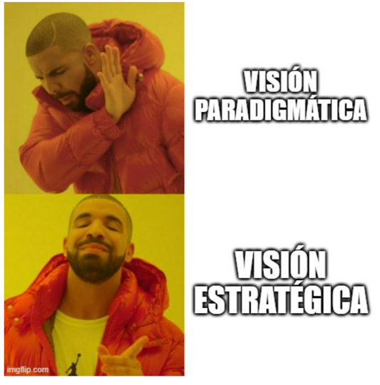
¿Qué vimos la clase pasada?
Preconceptos y Prejuicios de lo cuantitativo
- Rodrigo Asún:
“Visiones exageradas/peligrosa ingenuidad sobre lo cuantitativo”:
- carácter “objetivo y válido”: poco críticos con sus productos, asumiéndolos como verdades neutras e independientes de ellos mismos y de sus juicios y prejuicios;
- carácter “positivista y parcial” de esta estrategia tienden a abandonar hasta la posibilidad de su utilización, mutilando sus capacidades de exploración de la realidad social
- Actitud informada: potencialidades y límites
Paradigma vs Estrategia
Definición paradigmática (modelo integral): mochila pesada
-Técnicas de análisis y producción de información
-Perspectiva epistemológica: positivismo, funcionalismo, búsqueda de objetividad, relación causal, generalización, sujetos atomizados; ideología (dominante capitalista)
Definición estratégica (técnica y operativa): mochila liviana
Actualmente prima la visión estratégica por sobre la paradigmática
¿Por qué un investigador cuantitativo debe ser positivista?
¿Por qué un investigador cuantitativo debe creer que sus resultados son “objetivos”?
¿Por qué un investigador cuantitativo debe suponer que sus sujetos de estudio son entidades atomizadas?
Ojo
Si, parece existir cierta correlación empírica entre métodos cualitativos o cuantitativos y adscribir a cierta percepción de la realidad social y del conocimiento científico
Hay más investigadores cuantitativos: positivistas y experimentalistas
¿Por qué un investigador cuantitativo debe ser positivista1?
La verdad es que yo no creo adscribir a ese modelo epistemológico (las críticas de la escuela kuhniana2 me parecen en gran parte acertadas), y me niego firmemente a dejar de utilizar la estadística.
Thomas Khun
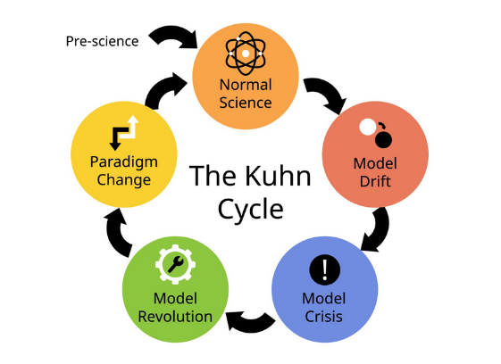
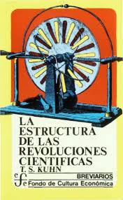
¿Por qué un investigador cuantitativo debe creer que sus resultados son “objetivos”?
Personalmente, cuando he aplicado algún instrumento para medir emociones no creo estar midiendo “hechos objetivos”, ni menos aún creo que mi forma de redactar las preguntas no influya en los resultados obtenidos; por el contrario, mi experiencia me indica que el solo hecho de preguntar modifica la realidad del sujeto (a veces incluso creando una opinión que no existe, proceso que tiene nombre: “cristalización”), y con mayor razón influyen el lenguaje y la redacción específica de la pregunta.
¿Por qué un investigador cuantitativo debe suponer que sus sujetos de estudio son entidades atomizadas?
Eso no solo sería ingenuidad, sino profunda ignorancia de los procesos de socialización que son responsables de que la gente asigne valores positivos o negativos a determinadas conductas.
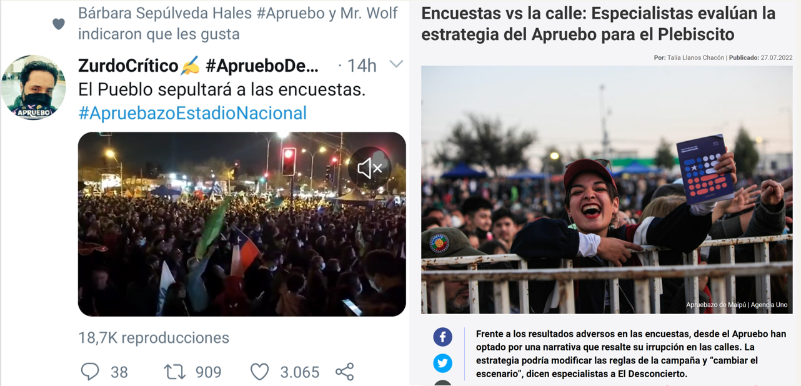
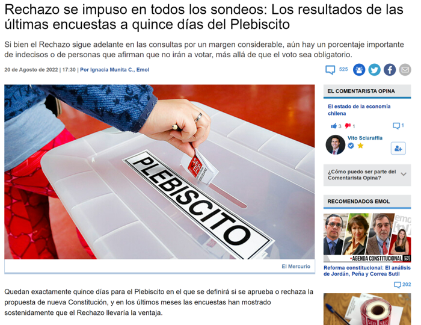
# 02. Numerización y medición de la realidad social {background-color=“#4B0082”}Objetivos de la sesión
- Discutir sobre implicancias del proceso de “medición” en Ciencias Sociales
- Introducir al diseño de investigación cuantitativa
¿Qué implicancias tiene la utilización de números?
Teoría de la medición → formas de tratar a las variables (ver el mundo en variables)
Técnica de codificación → instrumentos de recolección de información
¿Qué implicancias tiene la utilización de números?
Procedimiento de traducción → operacionalización
Procedimiento de selección de sujetos → muestreo
Procedimiento de análisis de información → estadística
Procedimiento de validación → jueces, técnicas estadísticas
¿Qué es medir? ¿Por qué lo hacemos?
Medir es asignar números a propiedades de los sujetos que definimos analíticamente Sentido de usar números:
- Simplicidad: ideas claras y unívocas
- Orden: unidimensional de menor a mayor a menor
- Distancia: tienen orden de distancia. [PP: ¿Qué es medir para la ISCUAN y qué sentido tiene usar números?] {style=“color: #4B0082;”}

- Medir es asignar números a propiedades de los sujetos que definimos analíticamente → estrategia analítica
¿Qué propiedades?
Se asignan números a propiedades de los sujetos que son definidas analíticamente mediante un proceso de abstracción.
Consecuencias de reducción cuantitativa
Propiedades/Variables tienen que ser simples y distinguibles, para permitir que se aísle una parte de la complejidad mediante un número. E.g. Posición entorno a la legalización de la marihuana o el aborto.
Datos obtenidos, también deben ser lo más simples posibles (Si/No)
Supuesto: nada esencial se pierde en el proceso aunque simplifiquemos la realidad
- estadística permitiría reconstruir la complejidad perdida
Sin embargo, inevitablemente se pierde la perspectiva global de los sujetos
En este contexto, la operación teórica se vuelve clave, en tanto medimos constructos.
PP: ¿por qué se habla de que medir de forma cuantitativa es una “reducción?”
La estrategia analítica
La estrategia analítica tiene su raíz en el tipo de análisis estadístico que es posible realizar para nuestras variables, y que usa como base la ‘matriz de datos’ aka la Base de datos

La matriz permite relacionar muchas propiedades de los mismos objetos/sujetos al mismo tiempo, y aplicar técnicas estadísticas al estudio de los hechos sociales.
Teorías de la medición
Medición ordinaria: Contar propiedades discretas: cuantos objetos hay del tipo contado - CANTIDAD
Medición fundamental: Teoría clásica de la Medición (Campbell)
- MAGNITUD
Medir es asignar números en función del número de veces que cabe una unidad de medida en el objeto que se quiere medir (la regla)
Implica:
-Arbitrariedad en la selección de unidad de medida
-Baja aplicabilidad en ciencias sociales
Medición ordinaria: cantidades para variables discretas
Medición fundamental: magnitudes para variables continuas
¿Qué teoría de la medición hay detrás?
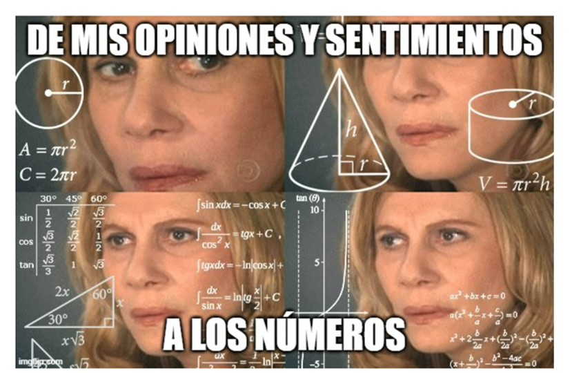
Teoría representacional de la medición (Stanley Stevens, 1946)
Medir es una representación arbitraria de relaciones entre propiedades.
Mediante una regla que tiene significados específicos según lo que se esté observando. El 1 y el 2 puede ser hombre/mujer o apruebo/rechazo.
Se opera por ‘reglas de asignación’ y se establecen diferentes ‘niveles de medida’:
Nominal (distinción)
Ordinal (orden)
Numéricas(Magnitud):
- Intervalar (distancia) - el 0 es relativo a la escala
- Razón (cero absoluto - ausencia de la cualidad medida)
PP: Defina lo que es una variable nominal, ordinal, intervalar y de razón y de un ejemplo para cada una de ellas
Implicancias de la teoría representacional de la medición
- No hay ‘unidades de medida’ (kilogramo, metro, etc.)
- Los números son asignados de manera arbitraria mediante ‘reglas’.
- Lo clave es más la ‘relación’ entre números que los números en sí (lo importante es que los números representen ‘relaciones’ entre objetos)
- La interpretación de los números es más ambigua.
PP: ¿Qué implicancias tiene la teoría representacional de la medición?
Medición indirecta o medición por índices
En ciencias sociales la medición tiende a ser indirecta
• ¿La razón?: medimos constructos latentes más que manifiestos (e.g. nivel de autoritarismo vs. altura o peso)
• ¿Cómo lo hacemos?: a través de indicadores indirectos → a esto le llamamos ‘medición indirecta o medición por índices’
• ¿Qué procedimiento seguimos? → la medición indirecta se desarrolla mediante el ‘proceso de operacionalización’
03. Las ideas de investigación
Ideas de investigación
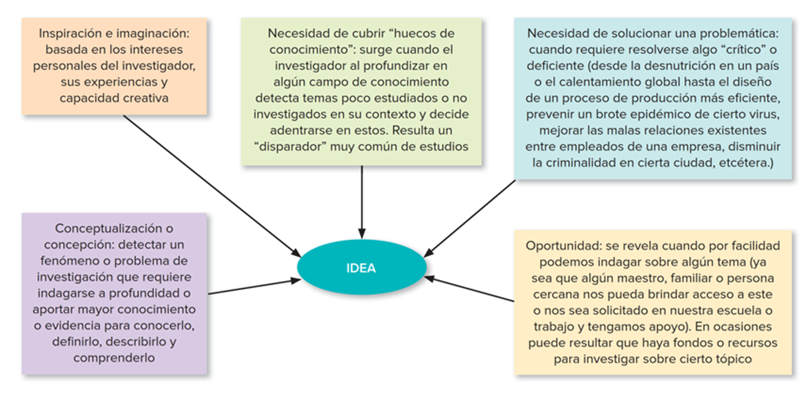
Ideas con potencial para iniciar investigación
- Intrigar, alentar y motivar al investigador (propio)
A veces son a pedido por campo educacional, académico o laboral (del mundo social donde uno se mueve)
De lo vago/confuso a lo específico que es investigable
- Conocer antecedentes o estudios previos (Hernández-Sampieri & Mendoza Torres, 2019)
04. El diseño de investigación
Diseño y su formulación cuantitativa
Distinción entre diseño y proyecto
El ‘proyecto de investigación’ (es un concepto más global; refiere al diseño, los recursos y el tiempo)
El ‘diseño de la investigación’ (estrategia concreta para conseguir los objetivos de la investigación, parte clave del proyecto)
4.1 Objetivo(s) del proyecto de investigación
- Representar a otro una idea de investigación de manera clara
- Construir un relato coherente (el relato es siempre más lineal que la práctica)
- Demostrar que el proyecto es factible
** Recordar la idea de hacer explícito
Etapas del diseño de investigación
I. Especificación de la pregunta de investigación: ¿Qué se quiere conocer específicamente? (delimitar)
- Introducción
- Planteamiento del problema y pregunta de investigación
- Objetivos de la investigación
- RelevanciasEtapas del diseño de investigación
- Especificación de la posición teórica: ¿Con qué materiales teóricos e investigaciones previas?
- Estado del arte (Marco teórico y/O revisión bibliográfica)
- Toma de posición (fundamentada)
- Definición de conceptos centrales y/o definición nominal de variables
- Hipótesis
Etapas del diseño de investigación
- Especificación de la metodología: ¿Cómo se quiere investigar?
- Tipo de investigación
- Tipo de diseño
- Diseño de la muestra
- Técnicas de producción de información
- Técnicas de análisis de información (Plan de análisis)
Etapas del diseño de investigación
- Título: qué
- Objetivos: para qué
- Pregunta de investigación: qué quiero saber
- Justificación: por qué y para quién
- Estado del arte: Otros dijeron que
- Marco Teórico: Con qué
- Metodología: cómo
- Hipótesis: yo creo que
- Conclusiones: yo tenía razón porque
- Referencias: donde otros dijeron que
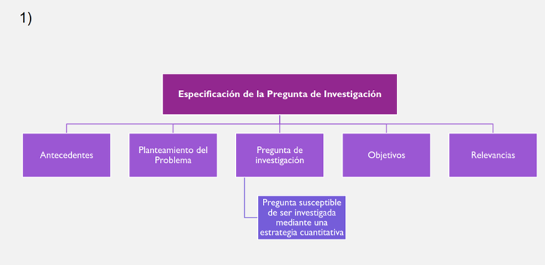
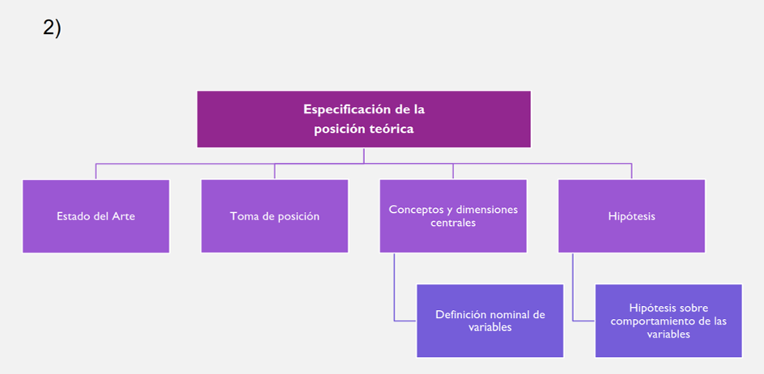
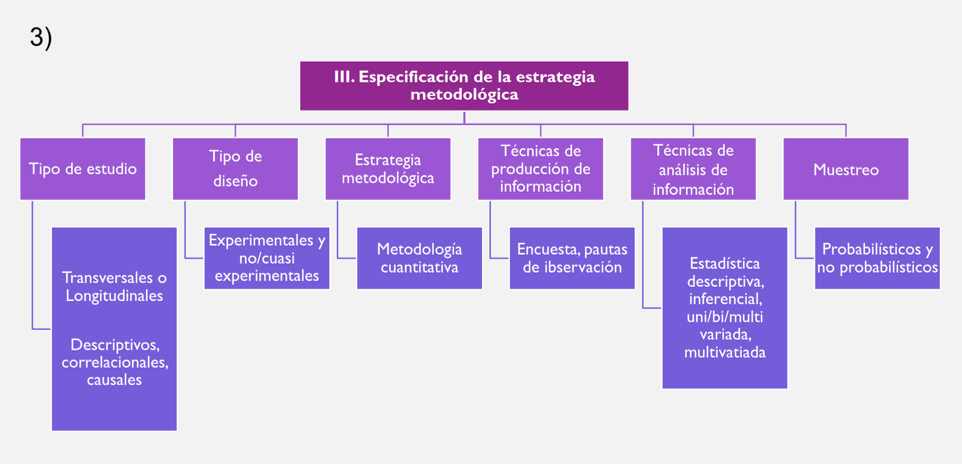
El problema y la pregunta
Terror in Resonance
Terror en Tokio (Zankyou no Terror o Terror in Resonance) es una serie de anime que gira en torno a dos jóvenes, llamados Nine y Twelve, quienes se presentan como los terroristas responsables de una serie de ataques en Tokio.
Shibasaki es un detective retirado que juega un papel crucial en la serie. A pesar de haberse distanciado del cuerpo policial, se ve arrastrado nuevamente a la investigación de los atentados de “Sphinx”. Su intelecto y experiencia lo posicionan como el único capaz de descifrar los mensajes y acertijos dejados por los terroristas (hacerse buenas preguntas).
A lo largo de la trama, Shibasaki no solo sigue el rastro de Nine y Twelve, sino que también empatiza con sus motivos, lo que lo convierte en una figura clave para descubrir la verdad detrás de la conspiración gubernamental. Su papel es esencial como el puente entre la ley y la verdad oculta, ya que, aunque es un representante de la justicia, también es crítico del sistema corrupto que los protagonistas buscan exponer.
PP: ¿Qué constituye una buena pregunta de investigación?
No debe ser ni demasiado amplia (imposible) ni demasiado específica (irrelevante)
Deben estar claramente definidos:
- El objeto de estudio
- Los conceptos y/o variables
- Los sujetos
- El tiempo
- El espacio
Debe tener alguna conexión con la teoría y la investigación existente
Debe ser capaz de hacer alguna contribución original (relevante en ámbitos académicos)
Ejemplos de preguntas de investigación que no pueden ser estudiadas empíricamente:
¿Cuáles son las causas verdaderas que explican el quiebre de la democracia en Chile en 1973?
- Imposibles de responder
¿Qué variables socioculturales se asocian al proceso de despolitización de los chilenos?
- Muy generales
¿Cuál es la relación entre nivel educacional y consumo cultural en el Chile moderno?
- Sin sujeto de estudio definido
¿En qué se diferencia el modo de vivir de católicos y evangélicos?
- Sin objeto de estudio definido
¿Cuál es la opinión de los narcotraficantes chilenos frente a la nueva ley de consumo de drogas?
- Con problemas de acceso
Ejemplos de preguntas de investigación que sí pueden ser estudiadas empíricamente:
¿Qué representaciones tienen sobre la “política” los estudiantes secundarios de la Región de Valparaíso en la actualidad?
¿Cuál es la relación entre el ‘nivel de interés en la política’ y el ‘nivel de educación’ de los chilenos y chilenas mayores de 18 años en la actualidad?
tienen:
un concepto-problema
un sujeto claro
en un espacio y tiempo definido
Ejemplos de preguntas de investigación que sí pueden ser respondidas mediante
una estrategia de investigación cuantitativa:
¿Cómo es la relación entre el ‘nivel de consumo cultural’ y el ‘nivel de educación’ de los chilenos y chilenas mayores de 18 años en la actualidad?
¿Cuál es la asociación entre ‘deserción escolar’ y ‘nivel socioeconómico’ de los y las adolescentes entre 12 y 15 años de la comuna de Recoleta?
¿Cómo influye el ‘género’ , el ‘nivel socioeconómico’ y el ‘nivel educacional’ sobre la ‘participación política’ de los estudiantes secundarios de la Región de Valparaíso?
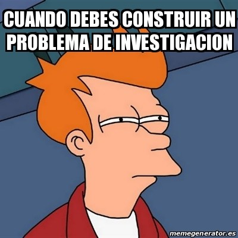
05. Taller
Revisión de ideas de investigación del curso
Definir un tema en conjunto por grupo y contestar:
- ¿Por qué es interesante para mi/nosotros?
- ¿Por qué podría ser interesante e importante para otros?
- ¿Contribuye a mi campo de estudio, mi institución, nuestros compañeros/as?
- ¿Se puede abordar de manera cuantitativa?
https://docs.google.com/document/d/1rnPj4Ws0fRB7pyEr_-ZLg1mCBndi91PmgaAHhzh4Feg/edit?usp=sharing
Formulación de pregunta
Partiendo de las Ideas Formulemos nuestra pregunta de investigación!
De las ideas a las preguntas
De las ideas de investigación elaboré una pregunta qué esté bien formulada (no sea tan amplia (que la haga imposible de responder), ni demasiado específica (que sea irrelevante)) y otra que esté mal formulada.
En la/s pregunta/s defina: Objeto de estudio: ¿Qué? Conceptos y/o variables: ¿De qué forma lo trataré? Sujetos: ¿A quiénes? Tiempo: ¿Cuándo? Espacio: ¿Dónde?
De las ideas a las preguntas
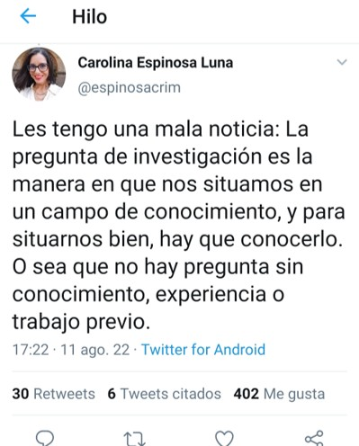
Tarea
A partir de lo conversado y pasado en el curso Redefinir idea:
- ¿Por qué es interesante para mi/nosotros?
- ¿Por qué podría ser interesante e importante para otros?
- ¿Contribuye a mi campo de estudio, mi institución, nuestros compañeros/as?
- ¿Se puede hacer de forma cuantitativa?